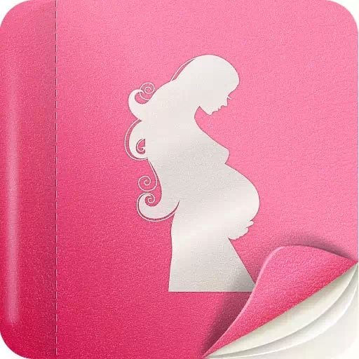
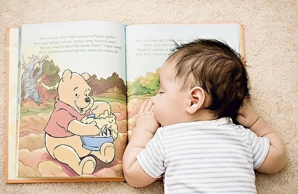
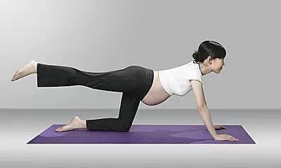
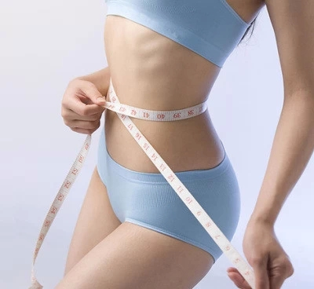

辣妈说：生娃是一件技术活!怎么样才能生一个健健康康的宝宝呢?产后恢复怎么做?这篇帖子都齐了!
备孕
孕前准备分为男方和女方两个方面
男方：提前半年戒烟戒酒，进行定期身体锻炼。如在服药，要咨询医师停药多久后方可怀孕。如自然备孕6个月未果，建议做精液检查看一下精子活力和畸形率是否正常。
女方：提前半年戒烟戒酒，进行定期身体锻炼，如在服药，要咨询医师停药多久后方可怀孕。从备孕开始，就要服用叶酸。一直服用到孕期前3个月结束。
如自然备孕3个月未果。可使用以下方式辅助提高怀孕几率
1、基础体温测试法
这个方法是检测你是否有正常排卵，以及你的黄体功能好不好的。
操作方法是：每天早上尽量选择同一时间段醒来，比如说闹铃7点。醒来后不要开口说话，也不要起身做大动作，直接取晚上准备在枕边的体温计测量体温。注意晚上要连续睡眠达到6小时以上。每天把这个体温记录下来，然后2点之间连线。正常的情况下，你会看到从上一次月经开始那天起到下一次月经来之前的那一天。体温是呈现前半段较低，后半段较高的
2.排卵试纸检测(只推荐大牌子的试纸)
排卵试纸是通过检测尿液中的一种激素水平来检测何时排卵的。
操作方法是：每天选取同一时段，比如上午10点，不要选取起床后第一次尿。也不要喝水后1小时内检测。试纸上有对比线和检测线。对比线是一直在的。检测线是检测后慢慢浮现出来的。可以从月经结束后5天开始检测。每天一次就可以了。当检测线的颜色有对比线一半深浅时就可以开始加大检测频率了。颜色越接近检测频率就要越高。当检测线的颜色和对比线一致或更深，表明即将排卵。当它的颜色从最深的时候又开始转浅了，表明已经刚刚完成排卵了。这时候同房怀孕几率最高。可以12小时同房一次，共2次即可。之前3天不要同房以提高精子数量。

3、全身排毒
有关研究表明：空气污染会对胚胎的质量产生影响，甚至导致胚胎停育。在备孕过程中，妈妈的身体如果含毒太多，不仅不利于宝宝的生长发育，而且也容易引起早产，胎儿先天体质不好等问题。我们现在生活的环境污染太严重了，吃的东西又重金属超标什么的，生出来的宝宝也不健康。
日本有一个报道，日本的孩子2/3在出生的时候体内重金属超标。所以国外很流行断食排毒，通过断食，为身体来一次彻底的大扫除，清除体内的毒素与垃圾，为宝宝的降生准备干干净净的身体环境。美国医学学会会员，权威营养治疗专家詹姆斯 •巴克说过：“断食有助于疾病的恢复，能清洁肝脏肾脏结肠，净化血液，减轻体重，排除毒素，改善新陈代谢。
7天的断食有治疗和重建免疫力系统的作用。10天能清除一些潜在的疾病。经常断食，会让各个器官得到休息，延缓衰老。”我有个朋友备孕的时候和她老公一起做了2次全进口的“铁元断食排毒”，他老公一次瘦了17斤，她一次瘦了10斤，重点是本来他们备孕很久了都怀不上，第二次断食结束后没多久就怀上了。现在儿子都三个月大了，小家伙长得超级好，很健康，胖嘟嘟的，可爱极了。所以，怀孕前做一次深层排毒真的很重要啊。另外要说的就是怀孕前就超重的人，太胖不仅不容易受孕，而且也不利于胎儿的生长发育。
美国的一项研究报告显示：怀孕前身体肥胖的妇女产下有缺陷婴儿的可能性要比体重正常的妇女大得多。所以，也推荐超重的人断食，这个可以说是最安全的减肥方法了，一般人一次断食下来都能瘦5~10斤，多的也有瘦十几二十斤的。最关键的是不仅瘦下来了，而且体内的垃圾毒素都排出来了，真的是一举两得。
孕中
为了孩子和自己的安全着想，你必须做到
准妈妈不能自行服用药物
尤其是头三个月，是药三分毒，不管是为了自己还是孩子，请不要自行吃药，包括中药。
你的身体健康才能保障孩子身体健康
所以注意冷暖，不要贪凉(孕妇很怕热)。不要去人多拥挤的地方。
不要吃生的食物
有的家庭怀孕是要扔掉宠物的，主要是怕宠物身上带有弓形虫，如果孕妇前3个月感染弓形虫对胎儿的危害很大。但是实际上宠物有专门的弓形虫检查，检查过没事就行了，孕妇不要与宠物接触过密就可以。至少我家2只哈士奇一直都和我在一起。
其实弓形虫更大的感染来源是生的食品。比如不是全熟的牛排，刺身等。所以，喜欢吃生鱼片的准妈妈们，为了宝宝一定要忍住!
穿宽松舒适的衣服
暂时和紧身裤，紧身衣说再见吧。为了宝宝和自己的健康，尽量选择宽松舒适便于活动的衣服。
如果要出门旅游，请选择孕中期
过安检时请说明自己是孕妇，从边上走。不要过X光，或多或少会影响的。
提前了解自己什么时候该做什么检查，不要错过
也不要为了检查过关而作假。中后期有糖筛，有些人为了第一次合格会少喝糖粉等，这是对自己和宝宝的不负责任。
一旦发现自己怀孕，第一时间去你心仪的妇产科医院预约
现在好的医院是一号难求。全国各地都一样，好不好真的有差别，毕竟这是关系到妈妈与宝宝，不得马虎。
孕后初3个月和最后3个月不易同房
前期是容易流产，后期是会早产。
为了自己的身材和健康着想，你需要做到
孕妇也不能暴饮暴食
不要以为自己吃的胖，孩子就会长得好。你吃多了只会胖到自己身上。
孕3个月
这个时期体重基本是没有明显变化的，因为孩子只是个胚胎，顶多重1-2斤。有些孕妇孕吐比较严重，会瘦几斤也是正常的。
孕4个月
这个时候开始，每周重1斤。直至分娩，大约增重25斤左右。如果孕前体型偏胖的，增重应当少于25斤。如果孕前体型偏瘦的，应当大于25斤。如果想最终保持在25斤左右，那么孕中期每周最好不足一斤。25斤总增重的话，最后产后大约只会留10斤肉在自己身上。
如果说具体吃多少的话，就是正常吃三餐，两餐间可以吃一点点健康小零食。不要狂吃水果。尤其是西瓜这种凉性且含大量糖分的水果。而且吃太多甜的，血糖也会上升，有的人甚至会得孕期糖尿病，以后早产、低体重儿、难产、巨大儿、先天畸形的几率也会更高。一个孩子三桶血，孕期气血容易虚，加上内分泌不稳定，就会导致代谢变差，可以喝日本的甲等莫柔米，补气血，提高代谢的，血糖升高其实就是代谢跟不上，只要代谢加快了，多余的糖分就能及时的代谢出去，血糖就不会上升了。我之前怀孕的时候血糖偏高，喝了莫柔米后血糖就下去了，真的很有用。
有条件的话一怀孕就开始喝吧，喝到哺乳期结束。代谢好代表了身体可以更好运用所摄入的营养，这样人也不容易吃胖，宝宝也得到更多有效的营养。
孕妇不能成天躺着休息
从孕中期开始，在身体感觉适宜的情况下，应当坚持每天有一定的柔和运动。散步是最好的方式。一定不要弄到自己很累哦。量力而行。所以孕前就要进行身体锻炼，否则到孕后期会感觉不堪重负。我是每晚散步30分钟大约3公里路。
孕妇就要穿孕妇的专门内衣
不要图方便在家就什么都不穿。有的人胸部会长得很大，如果没有支撑，一般人都是断奶后下垂，那不穿内衣的还没生孩子就已经下垂了。
妊娠纹霜从孕第4个月就可以开始涂了，每晚一次
到孕第7个月开始可以早晚各一次。觉得哪里皮肤痒要着重多涂。涂的范围：胸部、肚子、腰侧、后腰、皮肤、大腿。这些地方都有可能会长妊娠纹，很多人只涂肚子前面一点点地方，结果别的地方就悲剧了。
孕期的行动要注意安全和防护
比如说捡东西不要弯腰，而是下蹲后捡起再站起来。这是保护你的腰部的。起床、站起等动作时腰部不要用力，而是扶着床沿和把手借力。
怀孕时各种难受怎么办
出血
孕早期较容易出现，出血这个问题既要引起重视同时也不要过于慌张。如果是胚胎不好的话，也不要硬保胎，那样孩子质量不高，硬是保胎下来可能将来还会出问题。遇到出血时首先不要慌张，卧床静养。如果流血终止了，可以去医院查一下HCG的翻倍情况，另外要查的是黄体酮。黄体酮怀孕后要保持在一定数值。
这2项如果查了没问题，那么就不要太担心，很多人都会有毫无原因的出血，我当时也遇到过3次出血。一般来说，进入第4个月就不会再出血了。如果孕中期和孕后期出血必须要立刻就医。请注意我说的出血情况的处理是指少量的出血，如果像月经那样的，那也不用纠结了，肯定是胚胎不好流掉了。
孕吐
这个个体差异是十分大的。有的人难受的一直吐一直吐，就算是没吃东西也会吐水出来。在家里绝对不要自己烧饭了，一点烧饭的气味都不能有。什么香水啊、驱蚊液、风油精、甚至那些孕前喜欢的气味都不要有。归根结底就是不要有气味!孕妇会连给自己刷牙都刷吐的，因为牙膏也有味道!然后吃饭尽量要清淡，越清淡越好，这样不容易引起呕吐。孕吐一般是孕4个月开始会好转的。
反酸
早期是因为激素影响、晚期是因为胎儿顶到胃，还有一些别的因素。使得孕妇极度容易反酸。反酸到什么程度呢?食道会烧灼痛。胃酸会活生生把自己烧出胃病来。不过不要太担心，只要不是很严重的，生产之后就会自己好。当时是很痛苦的。
腰痛
当肚子大到一定时候时，身上的骨骼都会发生变化，盆骨和胸腔都会慢慢变宽，肚子周围一圈的骨头多少都会开始偏离自己原来的位置。于是乎，你就发生自己的腰一点也使不上劲了。你没办法再正面朝上躺着睡觉。因为后腰会受不了。我的缓解方案就是给自己买一个孕妇抱枕，别省这点钱，有了这个你真的会舒服很多，至少孕9个月前你还能睡得比较踏实。
尿频
胎儿长大之后，上顶胃下顶膀胱。所以孕妇十个里头有十个都是尿频的。那么大个子宫压在膀胱上会让你觉得每喝一口水都需要上一次厕所。不要因为这样就少喝水。这个没啥办法。睡前别喝水吧，不然你夜里最少要起来2-3次了。
水肿
孕中晚期的问题，多半人都有。孕妇吧就是和正常人不一样。好多东西都代谢不好。水分也容易潴留。我的方法就是每天穿小腿的静脉曲张袜，一定要买医用的，别贪便宜买那种死硬死紧的，那只能妨碍你的血液循环。医用的会帮助肢体末端血液回流，这样能改善水肿情况。这种袜子的还有一个好处是脚不会变大。很多孕妇怀孕完了脚都会大一码甚至两码。原因就是激素导致全身骨骼松动，连脚的骨头都松开了。另外就是口味不要太重。盐吃多了容易水肿。
牙龈出血
因为孕激素的关系，导致孕妇孕期特别容易出牙病，而且孕妇吃的多，吃的频繁。所以空腔问题不容忽视。每天至少保证2次刷牙。如果在不能闻牙膏的阶段，可以考虑使用漱口水。不过漱口水的味道也不好闻啊，实在不行就算是每次吃完东西用清水漱口一下也比什么都不做好很多。牙病如果严重起来还会危害到腹中胎儿。所以一定不能忽视哦。如果牙龈出血，可以在清水中放一点盐。再进行漱口可马上止血。
孕后期要准备的东西如下
妈妈部分
哺乳内衣---无钢圈有支撑力，方便哺乳
漱口水---不方便刷牙时用
洗手液或者免洗消毒洗手液---无法起床时用来饭前消毒
肥皂---医院里总要洗点东西
洗洁精---医院里洗饭碗、勺子等
脸盆3个---一个擦脸一个擦脚一个擦下身
毛巾2-3条---擦不同的部位
晾衣架几个+内衣架1个---不用说了吧
马桶垫---医院里的用自己的一次性马桶垫吧，卫生些
弯头吸管---无法起身喝水时必须的
一次性内裤---头几天恶露非常多，就用一次性内裤吧，不然弄脏了也好难洗哦
舒珊卫生巾40cm的五包---前期恶露多时用
舒珊卫生巾28cm的五包，24cm的四包，护垫一包---恶露少了之后用
Ps：卫生巾不要乱买，一定要舒珊这种可以抑菌的对伤口好，贵就贵了。平时不舍得已经不对了，这个时间再省就太对不起自己了。
束腹带---产后收腹用的
骨盆带---产后回收骨盆用的
乳头防护膏---母乳的妈妈乳头很容易破，必需的
软底拖鞋一双要带后跟的---坐月子一定要保暖到脚后跟
棉袜2双---就算是夏天也要记得穿袜子
防溢乳垫---母乳的妈妈必需的，要不母乳会漏湿衣服
吸奶器---挤奶好帮手
一次性杯子---医院里用来喝水
出院穿的衣服---别忘了你进去是大肚子，出来衣服就要小一号了
护肤品---医院里用
抽型面巾纸---医院里用
照相机---记录珍贵时刻
摄影机---记录珍贵时刻
帽子---出院别吹风，带好帽子
疤痕贴---如果是剖腹产别忘了护理伤口
收腹霜---自制的，有没有问题都不大
钙片---产后继续补钙不要停，尤其是母乳的妈妈
乳清蛋白粉---剖腹产妈妈推荐，帮助伤口快速愈合的
塑料袋---医院里要用的
胸部按摩油---自制的，主要是断奶后才用得到
牙刷牙膏---月子里也要保持清洁
梳子---月子里也需要梳头

宝宝部分
纱布几条---用来擦洗宝宝各处
奶粉一罐---不希望吃医院提供奶粉的要自带，无论有无母乳，都要备一罐
奶瓶2个---不用解释
奶瓶消毒锅---医院里一般也有提供奶瓶，但还是用自己的安心，所以消毒设备也是要带的
衣服一整套---给宝宝出院时穿
奶瓶刷一套---清洁奶瓶用的
软勺---有人不希望用奶瓶喂奶，担心影响母乳吸吮的，可以用软勺喂
护臀霜---防止红PP
擦屁屁的湿纸巾---宝宝便便后用
擦嘴的湿纸巾---给宝宝清洁口腔
纸尿裤---用医院的或者自己的
产后
首先大家要去网上详细了解好顺产和剖腹产的过程，做好心里有底自己将要面临怎么样的过程。顺产有不同的产程，需要配合不同的呼吸方法。何时该用力何时不该用力。是否要侧切，是否使用辅助的镇痛设备，都要自己事先了解清楚考虑好。
产后
剖腹产下地是一个关卡，必须由2个人左右搀扶产妇，必须非常慢，先坐起来，休息一下然后身体侧到床边，再休息一下，然后站起来。第一次站起来会很疼，用一只手扶着刀口。站起来了就胜利了一半，然后一步一步慢慢挪去厕所。无论是顺产还是剖腹产，不要一直躺着，要在床上左右翻身，多多下床走动。剖腹产必须要等产后放了第一个屁之后，才可以进食固体食物。多活动可以帮助你早点排气。
生产之后饮食要清淡，以流质、半流质再向固体食物转变
因为产后的消化系统是比较脆弱的，不要给肠胃很大负担。孕期在身体里储存的能量还有很多，用不着立刻进补。可以吃些好消化的粥类。但不要加荤汤在里面哦。
开奶
开奶是产后一个比较重要的环节。无论顺产还是剖腹产，产后应当尽早让宝宝来到自己身边吸吮乳头，哪怕什么都吸不出，也要坚持2小时吸一次。这能促进泌乳素分泌。另外就是找人按摩乳房，越早开始越好。如果乳腺不通，等奶都来了，胸部就会涨的和石头一样，那时候再按摩就和刀割差不多疼了。所以生完了就使劲按摩吧。一般顺产第二天就会有奶。
剖腹产是第2天晚上或者第3天开始有奶。切记不要错过时间。另外有些医院会提供配方奶给婴儿。这个其实也是对的，因为宝宝第一天喝不上母乳，也不能让他就这么饿着。保险起见最好是用软勺来喂，如果是奶瓶，有些宝宝可能会发生以后不愿吸妈妈奶的可能，因为奶瓶吸起来省力多了。但在每次给宝宝喝配方奶前都要先吸吮妈妈的奶。宝宝在饿的时候才会力气比较大，吃过了配方奶，它可能马上就睡了不愿意再费力吸奶了。
恶露
产后恶露开始两天会很多很多，后面就会和月经一样了，一周后差不多就比较少了。但是会反反复复，总计要持续1个多月吧。如果用舒珊这种带有暖宫功能的卫生巾，恶露时间还会更长一点。因为远红外的暖宫效果是可以促进血液循环，能促进排尽恶露，恶露排得干净，对于产后恢复也非常有利。另外顺产后下面有伤口，产妇身子又虚，很容易细菌感染。所以产后卫生巾的选择，不得马虎。
如何做月子
月子里能不能洗头、沾水之类的问题
怀孕使全身骨头松弛打开，这其实是为了让母亲准备分娩时让胎儿能从骨盆中通过。但因为激素影响，除了骨盆以外的骨头其实都有松弛现象。生完了之后，骨缝没有闭合前，是容易钻入寒气的。所以如果要沾水，必须用热水。恶露未干净前严禁坐浴，要淋浴，淋浴时注意保暖。洗头的问题见仁见智。我月子里平均5天洗头一次，现在没有任何后遗症，保暖是关键。
月子期间的保暖
说到保暖，那就不得不说说月子里的穿着。无论是春夏秋冬，都要记得一点就是长袖长裤穿带跟的鞋子。另外因为生完孩子之后的一段时间内，可能是几天，也有人是几个星期的，会出很多虚汗。就是人稍微活动一下，比如散步，就会出一身汗。那就要把汗擦干了换一身衣服，不要穿着汗湿的衣服，那样寒气也会从毛孔里进入身体。
产后的饮食问题
生完孩子之后头两天不要急于进补。那时你的脾胃还很虚，别忘了你的胃在怀孕时受了多大的罪，它还没有准备好马力全开消化大鱼大肉。前两天吃的清淡些，慢慢加营养。
母乳的妈妈们注意，饮食要尽量少盐，不吃调味料。因为这些都会通过乳汁喂给宝宝。宝宝的肾脏尚未健全，不能吃盐。可以查一查哪些东西是适宜哺乳期吃的。比如容易使孩子过敏的食品、含酒精的、咖啡因的食品，会回奶的食品等。另外就是乳腺没有通畅前，不要喝荤汤，最好是少量喝水。不然这些水都会变成奶，乳腺不通畅，就会涨奶，有的人甚至会涨得跟石头一样，很痛的。
为了帮助乳腺疏通，可以不时地按摩胸部，自己没力气可以让老公帮忙。另外气血好坏决定奶水的通畅和多少，和浓度(也就是营养含量)。中医认为奶水就是血变成的，现在网上比较火的两个进口补气血的东东，一个是日本的甲等莫柔米，另一个是德国进口的铁元，铁元在国外比较有名的大牌子，在50多个国家都有，记得要买中国版的，因为德国人比较严谨，给到每个地区的配方不一样。东方人有适合东方人体质的配方。中国版也都是德国原装的。
补气血可以帮助疏通经络，改善身体代谢水平的。我是从怀孕6个月开始两个一起喝的，孕后期容易水肿，恩恩不畅，缺血，因为坚持喝，自己都没遭遇。生完孩子后也坚持喝，不仅奶水又多又浓，而且身材恢复地也很快，我没有刻意减肥，现在都比怀孕前还瘦了两三斤呢，朋友们都说看不出我生过孩子。
月子里尽量不要太用力
包括抱孩子，尽量不要抱，喂奶尽量采取侧躺姿势。原因也是因为骨骼还未恢复。一切受力都可能会留下后遗症。要抱孩子你有的是一辈子的时间，不要急于这一两个月。月子里抱孩子抱多了，手腕手指手臂腰部都容易受损，月子里你的任务就是自己休息好。母乳的妈妈给孩子喂奶一般最少3小时要一次，半夜里也要起来好几次，所以这就已经很累了，其它的事情不要多想多插手，都交给家里人办就行了。
月子里眼睛要少用
如果说完全不看电视电脑也不现实，每次控制在半个小时吧，如果实在无聊可以听歌看书。看书虽然也伤眼睛，但至少没有屏幕那么伤，而且要掌握好每次看的时间不要太长。尽量多休息，白天可以打几个盹儿，多做做眼保健操吧。
月子里不要急于运动，尤其是不要给各处关节负累
因为我断奶了之后比较空闲，就开始做一些运动了。但是事实证明，不能这么早开始，否则就会像我一样伤了膝盖。我推荐可以做这些运动：平躺在床上的仰卧起坐等腰腹一段的训练。散步。其它任何对关节无压力的柔和运动。
关于产后身材的恢复
收腹带—生完就要用
不建议一生完就绑那种很紧的，会影响子宫的归位。剖腹产医院一般有发一种棉布做的，拼接一点弹力绳，非常柔软的收腹带，用来按住刀口。一般医院都是L号的，绑起来不紧，就像贴身衣服的感觉，一个起到了护腰的作用(月子里腰千万不能受寒)，另一个也可以适当的对腰部进行收复。

一周就可以开始使用收腹带了，尤其是站立和走动的时候，躺着和坐着也尽量带起来。不要过早使用，否则太紧会影响子宫按时归位。也不要买弹性太大的，弹性大伸缩也大那种效果并不好。我的建议是买两个尺寸。生完肚子收的是很快的，当时买了S和XS的，两周后一般就可以用S的了。
产后三个月内一定要用束臀带
在产后三个月内都要坚持使用束臀带，这个比收腹带更重要。因为一旦定型就很难再收了，因此抓准时机非常重要。这就是为什么许多人生完瘦了，但还是看上去没有少女的感觉，就是所谓的“妈妈像”。
束臀带建议出了月子，恶露干净后使用，如果恶露还没流干净就急着绑的话，恶露会变多。生产完32天，我只能穿28的牛仔裤，勉强套上。产后3个半月，我便能穿26的牛仔裤了。束臀带的位置是臀峰偏上处，绑上后感觉屁股被压扁了就是正确的。
当妈了也要前凸后翘!
许多妈妈担心产后哺乳会使乳房下垂甚至变形，其实产后是女性胸部保健的绝佳时机，主要方法得当，完全可以回复原来的状态。平时可以注意下保养，一定要穿文胸，不要贪方便在家就不穿，每天注意按摩，喂奶时不要让孩子过度拉扯乳房，另外介绍一款美胸宝物：台湾舒珊贴，可以紧致提升胸部，淡化乳晕，还可以改善增生引起的胀痛。

是100%蚕丝制造的，可以向胸部释放蚕丝天然所含的很多种氨基酸。释放的氨基酸是蚕丝天然所含有的，所以绝对无添加。怀孕之后因为荷尔蒙的变化，乳头会变黑，乳房也会下垂，所以产后保养就至关重要了。女人生完孩子后用舒珊贴，乳头和乳晕很快会恢复又白又嫩的少女状态，而且还有提升胸部的效果。其实最理想的是从怀孕就开始用，这样就可以减少变黑和下垂的程度，尤其是可以预防胸部妊娠纹。产后复原得也会更快更理想。(妊娠纹属于纤维断裂，理论上如果长了就无法消除)
对于女人而言，舒珊贴是一个神奇的发明，用过之后才知道，乳头粉嫩就是显年轻啊。而且皮肤会变嫩嫩的，触感超自信，无论哪个阶段的女人，娇嫩了总会沾沾自喜。绝对不能让男人嫌自己老。而且月经来之前也不胀痛了，说明增生有好转。
产后身材恢复：运动最有效
除了每天穿塑身衣外，要适量配合运动。中医里说，产后大虚要修养100天，所以我的建议是，三个月后再开始运动。在孕期身体已经疲软了一年，所以一开始可以选择比较简单的操做一做，比如熟知率特别高的郑多燕，一开始只要做全身操就可以了，相对比较简单，每天做20分钟。如果坚持不了减少一些也可以，刚开始做的时候可能马上就一身汗，并且在第二天感到肌肉酸痛，这是再正常不过了，做运动一定要量力而行，开始的时候不要心急会给关节造成负担，所以，这是个长久战，准备开战吧!

然后最好备个电子称。在运动初期，体重是会上升的，坚持个三四天左右，你变能发现体重在下降了。至于下降速度因人而异，当时我一个人带孩子阿全又比较忙，饭吃的比较少，光跳郑多燕我一周瘦了6斤，而且基本没反弹…但是我的建议是不要减太快，差不多保持一周两斤。(不过跳郑多燕也有代价，就是大腿肌肉会变粗. 如果不差钱，建议还是断奶后用那套进口的铁元断食排毒吧，一周都瘦10斤了，省去好多奋斗哦，皮肤也会更紧致。)
还有!水要运动前喝，运动过程中和运动后尽量不要喝很多水，实在很渴可以抿一点点。等汗都干了，身体冷却了，再喝水洗澡。
后记
只要勤快点注意点，每个宝妈都能成为辣妈哦!
推荐阅读：
爱之深，情才真 为“父情节”献礼，我们在行动！
【去伪存真】 科学揭秘“辟谷养生”真相
专家解析“吃榴莲之后饮牛奶，毒过眼镜蛇!”
纽约卫生局叫停吃蟹！怎么才能愉快地吃螃蟹？
【医天下】芹菜，是杀精利器还是保健福星?
【科学防癌】“中国式”癌症 你了解多少?
【真的?假的】吃一口鱿鱼相当于吃40口肥肉?
【体检那些事】抽血管为什么有那么多颜色?
【今天你吃了吗!】女性一生大概会吞下6磅唇膏?
【贪吃惹的祸】折磨忽必烈的“顽疾”不难治
【解读】肺癌为何成为第一大癌?
【崇洋媚外为哪般】体检治疗何必去欧美?
【癌中之王】胰腺癌=死亡？
【上流医学】功能医学到底能解决什么问题?
关于粽子这点事
让健康“出轨”的九大恶习
【必看】女性一生必做7种检查!
【养生之道】空调房里也有养生法则?